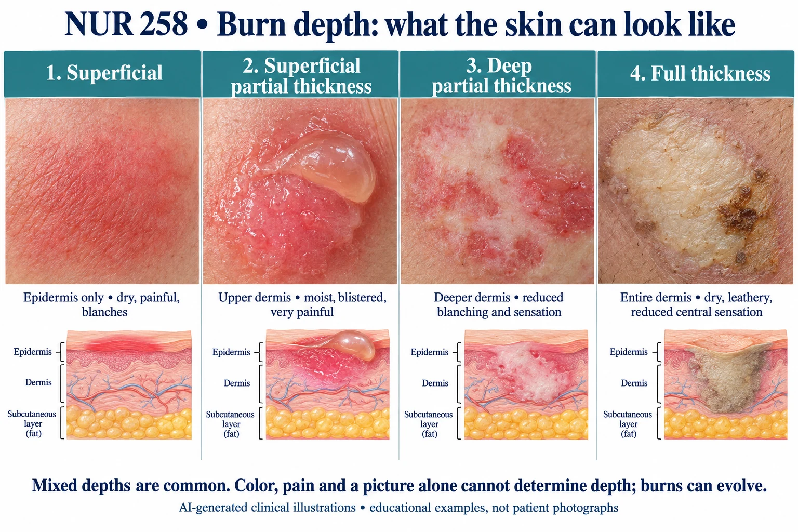

ABSN STUDY HUB · VISUAL STUDY CARD
Burn depth and skin layers

Course labels and notes from the original graphic, arranged into readable sections. The illustration is schematic.
Original course labels
- How deep each burn goes — and why the deep ones stop hurting
- red · dry · no blister
- wet, weeping blisters
- waxy, blotchy red and white
- dry, leathery eschar
- surface
- epidermis
- papillary
- dermis
- reticular
- dermis
- subcutaneous
- fat
- muscle
- hair
- sebaceous
- sweat gland
- capillary
- nerve endings
- deep nerve
- destroyed
- destroyed
- destroyed
- destroyed
- Superficial
- first degree
- epidermis only
PAINFUL
- heals ~1 week, no scar
- Superficial partial
- second degree
- into the upper dermis
VERY PAINFUL
- blisters · heals 2–3 weeks
- Deep partial
- second degree
- into the lower dermis
- LESS painful
- scars · may need grafting
- Full thickness
- third degree
- all layers, into the fat
PAINLESS
- always needs grafting
- Painless is the frightening one.
- A burn that does not hurt has burned through the nerve endings — that is depth, not comfort.
- And superficial burns are never counted in the rule of nines or in Parkland — you start at partial thickness.